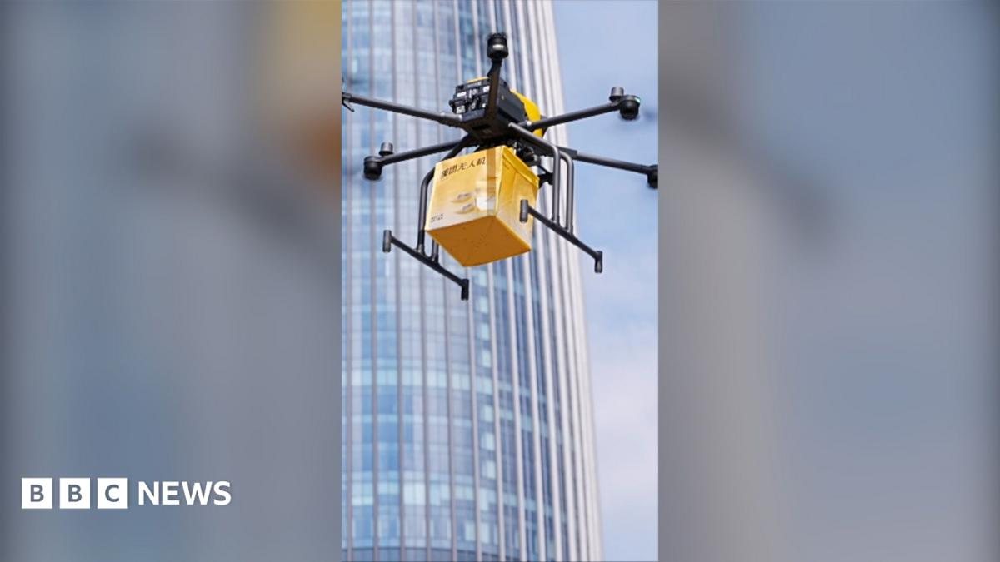

World · 18 Nov 2026
Inside the Chinese 'AI wonderland' where Xi will host Trump

The meeting will take place as Trump attends the Asia-Pacific Economic Co-operation (Apec) summit in the southern city of Shenzhen.
Multiple independent publishers are reporting on the same development: Inside the Chinese 'AI wonderland' where Xi will host Trump.
The available reports place the development in the World category. The accounts were compared for agreement on the central event rather than simply shared names or broad topics.
One of the available reports describes the development this way: The meeting will take place as Trump attends the Asia-Pacific Economic Co-operation (Apec) summit in the southern city of Shenzhen.
Readers should consult the linked source reports for additional context, updates and details that may change as the story develops.
Sources
This article was produced by the C. O. Eric AI Newsroom from the cited sources. It is published only after automated evidence and safety checks.